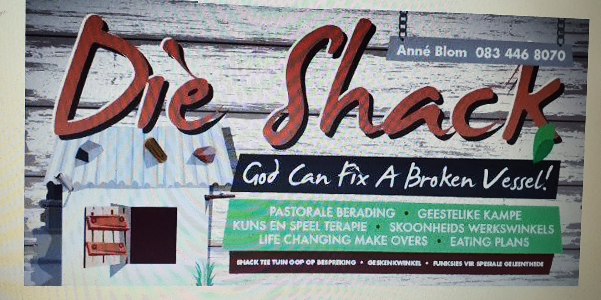

Prayer & support
Compassionate prayer and spiritual encouragement for individuals, families, and visitors seeking hope.
Faith, healing, and the presence of God
Blom's Ministries is a welcoming Christian ministry in Muldersdrift where people can come for prayer, encouragement, worship, and quiet moments of restoration in a peaceful setting.
A ministry with warmth
A place where people can step away from pressure, find spiritual encouragement, and experience the calm beauty of a ministry space designed for peace, prayer, and hope.
About Blom's Ministries
Blom's Ministries is a place where people can come as they are and be welcomed with compassion, grace, and faith. It is designed to offer a peaceful atmosphere for prayer, reflection, healing, and renewed closeness with God.
Whether someone needs encouragement, spiritual support, or simply a quiet space to breathe and reconnect, the heart of this ministry is to make room for God to meet people personally.
A place for personal prayer, support, and bringing every burden before God.
A calm and faith-filled environment that encourages restoration and renewed strength.
Bible-centered encouragement that helps people move forward with peace and confidence.
Our vision
Blom's Ministries exists to create a Christ-centered environment where people feel welcomed, uplifted, and reminded of the goodness of God. It is a place for worship, spiritual care, and moments of quiet restoration.
What to expect
Compassionate prayer and spiritual encouragement for individuals, families, and visitors seeking hope.
Faith-filled ministry and Christ-centered messages that strengthen the heart and uplift the spirit.
A warm and serene atmosphere where people can slow down, reflect, and draw near to God.
Gallery
Beautiful surroundings, warm spaces, and a peaceful atmosphere that helps people feel at home.

A place of peace
Every part of the ministry experience is meant to help visitors feel safe, encouraged, and open to what God wants to do in their lives.
A place for worship, prayer, healing, and meaningful moments in God's presence.
Contact
If you would like to visit, connect, or learn more about Blom's Ministries, reach out and we will gladly share more information.
Location
47 Riverside Road, Muldersdrift
Phone
083 446 8070
Email
info@dieshack.co.za